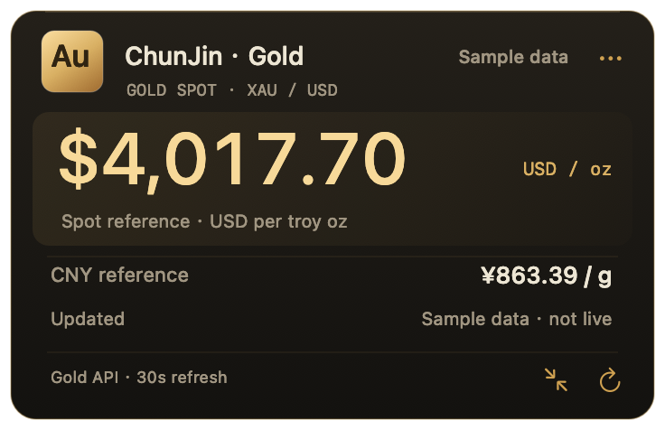
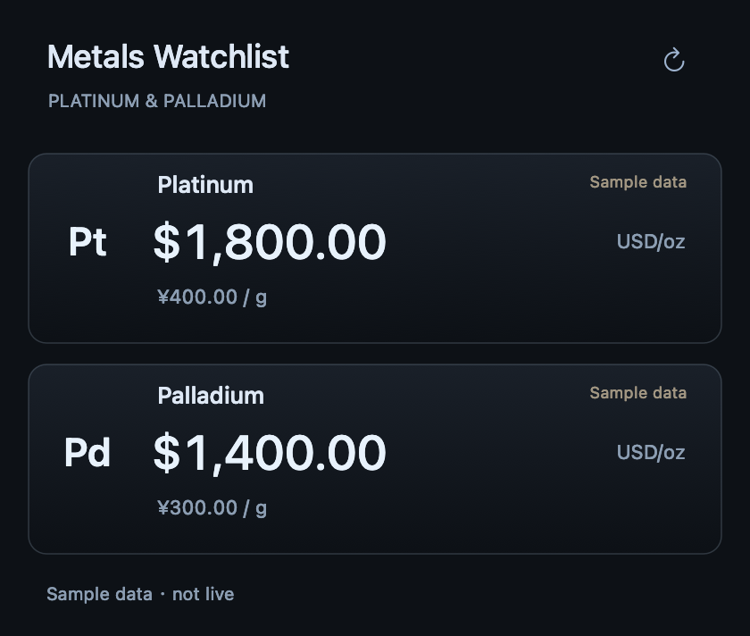

Keep metals in view.
A calm place for gold, silver and copper on your Mac. Arrange magnetic panels your way, with platinum and palladium a click away.
Interface examples with sample prices. Not live market quotes.
Separate when you need space.
Together when you move.
Pull panels close to align them. Drag an attached member to move the group, or hold Option to detach. Compact strips and full panels can share the same desktop.
Gold and silver stay visible; copper is optional. Platinum and palladium live in a separate watchlist.
Switch between USD and CNY. Precious metals use troy ounces or grams; copper uses pounds or metric tonnes.
Updates are checked every 30 seconds. Last valid quotes are kept offline and marked stale when needed. Times follow your system time zone.
A little more detail.
A little less space.
Use a full panel for price, source time and currency reference. Switch to a compact strip when you want more room for your work.

A wider view,
when you want it.
Keep platinum and palladium in a dedicated watchlist. Open it from a panel menu when you need another perspective, and keep your desktop focused on the metals you follow most.

A small place for the bigger picture.
A native desktop app for macOS 12 and later.
Built for Intel and Apple Silicon. No account required.
Planned China mainland launch price. Other regions use local App Store pricing.
Coming to the Mac App StoreThird-party reference prices. CNY values are currency and unit conversions. Prices may differ from banks, retail dealers and exchanges.